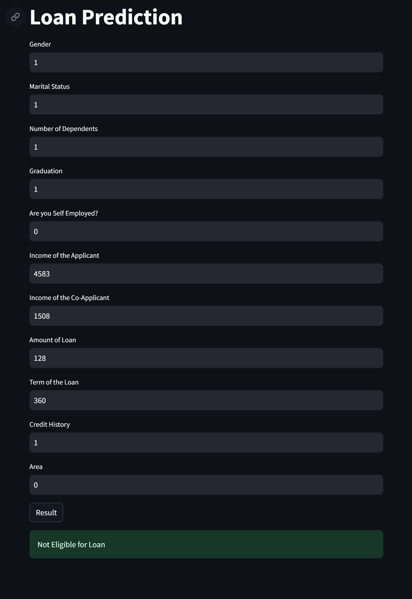

This project utilizes Support Vector Machine (SVM) classification to predict loan approval status with an accuracy of 83.33% on testing data, following thorough data exploration, preprocessing, and model evaluation.

project explanation
Below is the explaination for the the Machine Learning Project shown above:
Step 1: Importing Libraries :
We begin by importing essential libraries such as Pandas, NumPy, Plotly, and Scikit-learn. These libraries are crucial for data manipulation, visualization, and machine learning tasks.
Step 2: Loading & Exploring the Dataset :
We load a loan status dataset into a Pandas DataFrame. The dataset is assumed to be located at the specified file path.
Step 3: Exploring the Dataset :
This step involves examining the dataset to understand its structure and contents.
- Displaying the first 5 rows of the dataset:
loan_dataset.head(5)
- Getting information about the dataset, including data types and null values:
loan_dataset.info()
- Printing the Number of Rows & Columns of the DataFrame:
loan_dataset.shape
- Printing the Statistical Values of the DataFrame:
loan_dataset.describe()
- Checking for the count of null values in each column:
loan_dataset.isnull().sum()
Step 4: Data Visualization :
We use Plotly Express to create various plots for visualizing the distribution of loans across different categorical variables such as marital status, education, gender, and loan amount. These visualizations provide insights into the data distribution and relationships between variables.
Step 5: Data Preprocessing for Modeling :
We preprocess the data to prepare it for modeling. This involves label encoding categorical variables, replacing categorical values with numerical equivalents to make them suitable for machine learning algorithms.
Step 6: Splitting the Data into Features and Targets :
We separate the features (independent variables) and the target variable (dependent variable) from the dataset. The features are the input variables used to predict the target variable, which is the loan approval status in this case.
Step 7: Splitting the Data into Training and Testing Sets :
We split the data into training and testing sets using the train_test_split() function. This allows us to train the machine learning model on a portion of the data and evaluate its performance on unseen data.
Step 8: Training the Model :
We instantiate a Support Vector Machine (SVM) classifier with a linear kernel and train it using the training data. SVM is a popular machine learning algorithm used for classification tasks.
Step 9: Model Evaluation :
We evaluate the trained model's performance on both the training and testing datasets using accuracy scores. Accuracy score measures the percentage of correctly predicted instances.
Step 10: Saving the Model :
We save the trained SVM model using the pickle module. This allows us to reuse the model without having to retrain it every time.
Step 11: Loading the Saved Model :
Finally, this step demonstrates how to load the saved model back into memory. This step ensures that the trained model can be easily accessed and used for making predictions on new data.
Model Deployment
Below is a Python script used in this project along with an explanation:
Script 1 : Model_Deploy.py
import numpy as np
import pickle
import streamlit as st
loaded_model = pickle.load(open("C:/Users/farza/Downloads/trained_model.sav", 'rb'))
def loan_prediction(input_data):
input_data_np = np.asarray(input_data)
# reshaping the array
input_data_reshaped = input_data_np.reshape(1,-1)
# Standardizing the input data
prediction = loaded_model.predict(input_data_reshaped)
print("Outcome : ",prediction)
if prediction == 0:
return "Eligible for Loan"
else:
return "Not Eligible for Loan"
def main():
st.title('Loan Prediction')
Gender = st.text_input('Gender')
Married = st.text_input('Marital Status')
Dependents = st.text_input('Number of Dependents')
Education = st.text_input('Graduation')
Self_Employed = st.text_input('Are you Self Employed?')
ApplicantIncome = st.text_input('Income of the Applicant')
CoapplicantIncome = st.text_input('Income of the Co-Applicant')
LoanAmount = st.text_input('Amount of Loan')
Loan_Amount_Term = st.text_input('Term of the Loan')
Credit_History = st.text_input('Credit History')
Property_Area = st.text_input('Area')
Loan = ''
if st.button('Result'):
Loan = loan_prediction([Gender,Married,Dependents,Education,Self_Employed,ApplicantIncome,CoapplicantIncome,LoanAmount,Loan_Amount_Term,Credit_History,Property_Area])
st.success(Loan)
if __name__ == '__main__':
main()
Step 1: Imports :
We import necessary libraries, including numpy for numerical operations, pickle for loading the saved model, and streamlit for building the web application.
Step 2: Loading the Saved Model :
We load the pre-trained model using pickle.load. Ensure that the path to the 'trained_model.sav' file is correct on your system.
Step 3: "loan_prediction" Function :
- This function takes an input list of data representing features related to loan status prediction.
- It converts the input data into a numpy array, reshapes it, and uses the loaded model to make predictions.
- Based on the prediction result, it returns 'Eligible for Loan' or 'Not Eligible for Loan'.
Step 4: "main" Function :
- In the main function, we create a Streamlit web application.
- We provide input fields for the user to enter information related to diabetes prediction, such as the number of gender, ApplicantIncome, CoapplicantIncome, and so on.
- When the user clicks the "Result" button, the loan_prediction() function is called with the provided input data, and the prediction is displayed.
Step 5: Running the Streamlit App :
We use the if __name__ == '__main__': block to run the Streamlit app when the script is executed directly.
Step 6: Displaying the Diagnosis :
The diagnosis result ('Eligible for Loan' or 'Not Eligible for Loan') is displayed using st.success.
Web Page Output
